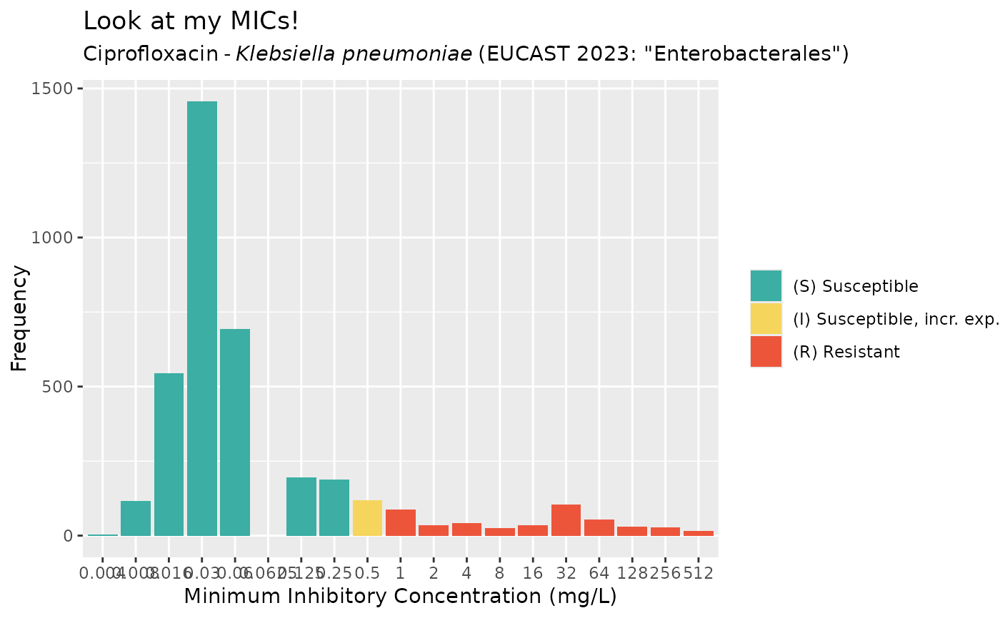
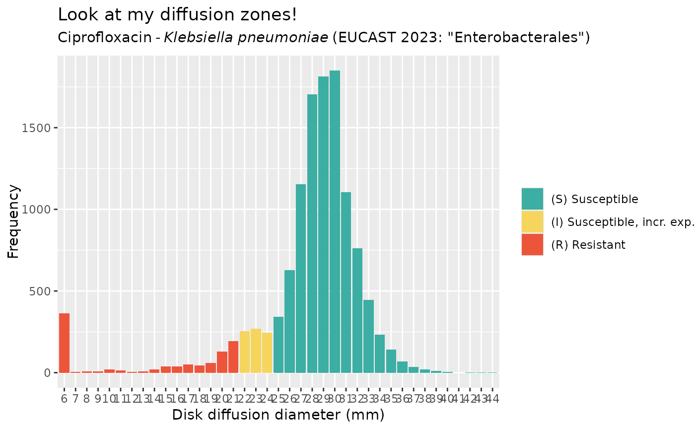
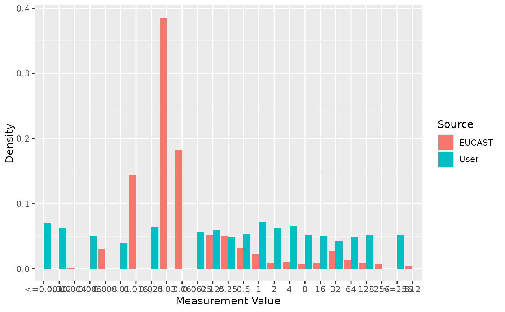

Get and Compare Antimicrobial Wild Type Distributions from EUCAST
Source:R/get_eucast_distribution.R
get_eucast_amr_distribution.RdThese functions allow retrieval of antimicrobial wild type distributions, live from eucast.org.
Usage
get_eucast_amr_distribution(
ab,
mo = NULL,
method = "MIC",
as_freq_table = TRUE
)
get_eucast_mic_distribution(ab, mo = NULL, as_freq_table = TRUE)
get_eucast_disk_distribution(ab, mo = NULL, as_freq_table = TRUE)
compare_mic_with_eucast(mics, ab, mo = NULL)
compare_disk_with_eucast(disks, ab, mo = NULL)Arguments
- ab
antimicrobial, can be anything understood by
ab_name()- mo
microorganism, can be anything understood by
mo_name()(can be left blank)- method
either
"MIC"or"disk"/"diff"- as_freq_table
either
TRUE(default) orFALSE, to return result as frequency table- mics
MIC values, will be coerced with
as.mic()- disks
Disk diffusion values, will be coerced with
as.disk()
Details
The compare_*_with_eucast() functions allow to compare a user range with EUCAST distributions. Use ggplot2::autoplot() on the output to visualise the results.
Supported Antimicrobials
In December 2024, EUCAST had 176 distributions available, namely for these antimicrobials:
Amikacin, amoxicillin, amoxicillin/clavulanic acid, amphotericin B, ampicillin, ampicillin/sulbactam, anidulafungin, apramycin, aspoxicillin, avilamycin, azithromycin, aztreonam, aztreonam/avibactam, bacitracin, bedaquiline, benzylpenicillin, capreomycin, cefaclor, cefadroxil, cefalexin, cefaloridine, cefalotin, cefapirin, cefazolin, cefdinir, cefepime, cefepime/tazobactam, cefepime/zidebactam, cefiderocol, cefixime, cefoperazone, cefoperazone/sulbactam, cefoselis, cefotaxime, cefotetan, cefovecin, cefoxitin, cefpirome, cefpodoxime, cefpodoxime/clavulanic acid, cefquinome, ceftaroline, ceftazidime, ceftazidime/avibactam, ceftibuten, ceftiofur, ceftobiprole, ceftolozane/tazobactam, ceftriaxone, cefuroxime, cephradine, chloramphenicol, chlortetracycline, ciprofloxacin, clarithromycin, clavulanic acid, clinafloxacin, clindamycin, clofazimine, cloxacillin, colistin, cycloserine, dalbavancin, danofloxacin, daptomycin, delafloxacin, delamanid, dicloxacillin, difloxacin, doripenem, doxycycline, enrofloxacin, eravacycline, ertapenem, erythromycin, ethambutol, ethionamide, faropenem, fidaxomicin, florfenicol, flucloxacillin, fluconazole, flucytosine, flumequine, fosfomycin, fusidic acid, gamithromycin, gatifloxacin, gemifloxacin, gentamicin, imipenem, imipenem/relebactam, isavuconazole, isoniazid, itraconazole, kanamycin, ketoconazole, lefamulin, levofloxacin, lincomycin, linezolid, loracarbef, marbofloxacin, mecillinam, meropenem, meropenem/vaborbactam, metronidazole, micafungin, minocycline, moxifloxacin, mupirocin, nalidixic acid, narasin, neomycin, netilmicin, nitrofurantoin, nitroxoline, norfloxacin, norvancomycin, ofloxacin, omadacycline, orbifloxacin, oritavancin, oxacillin, oxolinic acid, oxytetracycline, pefloxacin, phenoxymethylpenicillin, piperacillin, piperacillin/tazobactam, pirlimycin, posaconazole, pradofloxacin, pristinamycin, pyrazinamide, quinupristin/dalfopristin, retapamulin, rezafungin, rifabutin, rifampicin, roxithromycin, secnidazole, sitafloxacin, spectinomycin, spiramycin, streptomycin, sulbactam, sulfadiazine, sulfamethoxazole, sulfisoxazole, tedizolid, teicoplanin, telavancin, telithromycin, temocillin, terbinafine, tetracycline, thiamphenicol, tiamulin, ticarcillin, ticarcillin/clavulanic acid, tigecycline, tildipirosin, tilmicosin, tobramycin, trimethoprim, trimethoprim/sulfamethoxazole, tulathromycin, tylosin, tylvalosin, vancomycin, viomycin, and voriconazole.
For the current list, run eucast_supported_ab_distributions().
Examples
get_eucast_mic_distribution("cipro")
#> # A tibble: 2,033 × 4
#> microorganism microorganism_code mic count
#> <chr> <mo> <mic> <int>
#> 1 Achromobacter xylosoxidans B_ACHRMB_XYLS 0.002 0
#> 2 Achromobacter xylosoxidans B_ACHRMB_XYLS 0.004 0
#> 3 Achromobacter xylosoxidans B_ACHRMB_XYLS 0.008 0
#> 4 Achromobacter xylosoxidans B_ACHRMB_XYLS 0.016 0
#> 5 Achromobacter xylosoxidans B_ACHRMB_XYLS 0.030 0
#> 6 Achromobacter xylosoxidans B_ACHRMB_XYLS 0.060 0
#> 7 Achromobacter xylosoxidans B_ACHRMB_XYLS 0.125 0
#> 8 Achromobacter xylosoxidans B_ACHRMB_XYLS 0.250 1
#> 9 Achromobacter xylosoxidans B_ACHRMB_XYLS 0.500 0
#> 10 Achromobacter xylosoxidans B_ACHRMB_XYLS 1.000 6
#> # ℹ 2,023 more rows
# not returning as frequency table
get_eucast_mic_distribution("cipro", as_freq_table = FALSE)
#> # A tibble: 107 × 25
#> microorganism microorganism_code `0.002` `0.004` `0.008` `0.016` `0.03`
#> <chr> <mo> <dbl> <dbl> <dbl> <dbl> <dbl>
#> 1 Achromobacter xylo… B_ACHRMB_XYLS 0 0 0 0 0
#> 2 Acinetobacter baum… B_ACNTB_BMNN 0 0 2 5 16
#> 3 Acinetobacter pitt… B_ACNTB_PITT 0 0 0 0 0
#> 4 Actinomyces israel… B_AMYCS_ISRL 0 0 0 0 0
#> 5 Aerococcus sanguin… B_AERCC_SNGN 0 0 0 0 0
#> 6 Aerococcus urinae B_AERCC_URIN 0 0 0 0 0
#> 7 Alcaligenes faecal… B_ALCLG_FCLS 0 0 0 0 0
#> 8 Bacillus anthracis B_BCLLS_ANTH 0 0 0 0 2
#> 9 Bacillus cereus B_BCLLS_CERS 0 0 0 0 0
#> 10 Brucella melitensis B_BRCLL_MLTN 0 0 0 1 0
#> # ℹ 97 more rows
#> # ℹ 18 more variables: `0.06` <dbl>, `0.125` <dbl>, `0.25` <dbl>, `0.5` <dbl>,
#> # `1` <int>, `2` <int>, `4` <int>, `8` <int>, `16` <int>, `32` <int>,
#> # `64` <int>, `128` <int>, `256` <int>, `512` <int>, distributions <chr>,
#> # observations <chr>, ecoff <chr>, confidence_interval <chr>
# specify microorganism to only get results for that pathogen
get_eucast_mic_distribution("cipro", "K. pneumoniae")
#> # A tibble: 19 × 2
#> mic count
#> <mic> <int>
#> 1 0.002 0
#> 2 0.004 4
#> 3 0.008 116
#> 4 0.016 545
#> 5 0.030 1456
#> 6 0.060 692
#> 7 0.125 196
#> 8 0.250 189
#> 9 0.500 119
#> 10 1.000 88
#> 11 2.000 36
#> 12 4.000 43
#> 13 8.000 26
#> 14 16.000 36
#> 15 32.000 105
#> 16 64.000 53
#> 17 128.000 31
#> 18 256.000 28
#> 19 512.000 15
get_eucast_disk_distribution("cipro", "K. pneumoniae")
#> # A tibble: 45 × 2
#> disk_diffusion count
#> <disk> <int>
#> 1 6 362
#> 2 7 6
#> 3 8 8
#> 4 9 8
#> 5 10 20
#> 6 11 15
#> 7 12 5
#> 8 13 8
#> 9 14 20
#> 10 15 37
#> # ℹ 35 more rows
# Plotting ----------------------------------------------------------------
mic_data <- get_eucast_mic_distribution("cipro", "K. pneumoniae")
mics <- rep(mic_data$mic, mic_data$count)
ggplot2::autoplot(mics, ab = "cipro", mo = "K. pneumoniae", title = "Look at my MICs!")

disk_data <- get_eucast_disk_distribution("cipro", "K. pneumoniae")
disks <- rep(disk_data$disk_diffusion, disk_data$count)
ggplot2::autoplot(disks, ab = "cipro", mo = "K. pneumoniae", title = "Look at my diffusion zones!")

# Comparing With User Values ----------------------------------------------
my_mic_values <- AMR::random_mic(500)
comparison <- compare_mic_with_eucast(my_mic_values, ab = "cipro", mo = "K. pneumoniae")
comparison
#> # A tibble: 25 × 3
#> value user eucast
#> * <fct> <int> <int>
#> 1 <=0.001 35 0
#> 2 0.002 31 0
#> 3 0.004 0 4
#> 4 0.005 25 0
#> 5 0.008 0 116
#> 6 0.01 20 0
#> 7 0.016 0 545
#> 8 0.025 32 0
#> 9 0.03 0 1456
#> 10 0.06 0 692
#> # ℹ 15 more rows
#> Use ggplot2::autoplot() on this output to visualise
ggplot2::autoplot(comparison)
